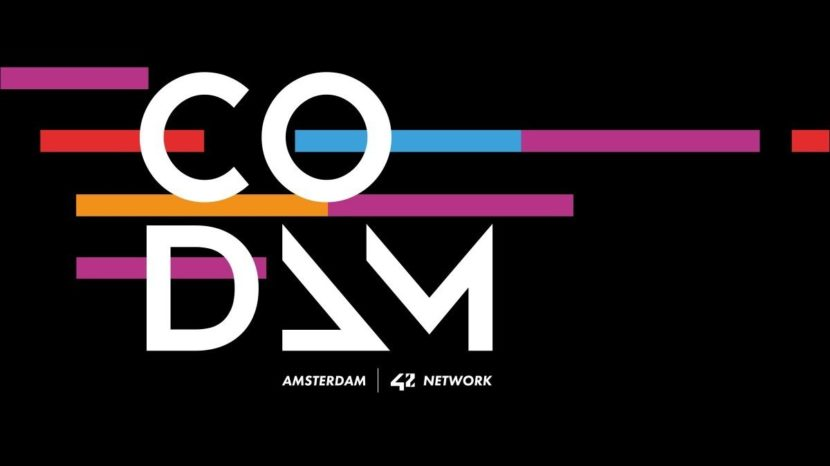
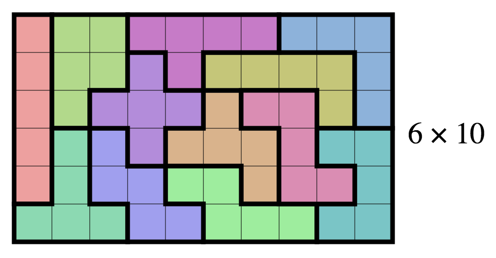
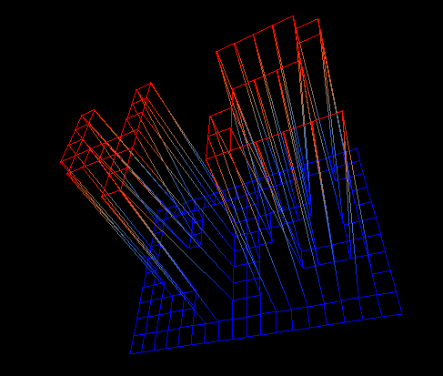

Codam Coding College
Codam Coding College is a programming school in the heart of Amsterdam, and part of the global 42Network of schools.
The curriculum is project based and focuses on peer to peer learning. There are no books, teachers or classes; projects are evaluated and tested by other students.
Initiating projects are written in C to foster a strong understanding of core programming concepts
(memory management, algorithms, data structures, types). Advanced projects allow students to specialize within different fields;
Students can choose projects about, for example, graphics rendering, advanced algorithms, system administration, web development or low level programming.

Implementations of C standard library functions.

A collection of C standard library function implementations, written to increase my understanding of programming in C. Frequently used in other projects.
Smallest square tetromino problem using a recursive algorithm.

A recursive algorithms that, given a list of tetrominos, finds a solution that combines them into their smallest square.
Sorting algorithm with operation constraints.

Given an unsorted list of integers, this program tries to sort that list with the lowest amount of stack operations.
Implementation of C-library printf.
My own implementation of the Standard C Library printf function.
3D line raster rendering engine from scratch.

A 3D line rastering engine, written in C. Can be used to represent landscapes and 3D objects with a given 3D coordinate map.
Create a C function that is able to read a file, line by line.
While only using read/write system calls, this function is able to read large files. Files are read line by line, with robust buffer management, error handling and persistent positition tracking.